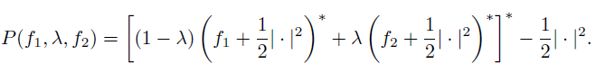

Piecewise linear quadratic (plq), convex proximal average via conjugates
pa = plq_pa(f1,f2,lambda_pa)
matrix. A plq function with dimensions n x 4.
matrix. A plq function with dimensions n x 4.
constant. An intermediate function.
matrix. A plq function with dimensions n x 4.
Compute the proximal average (PA) of two plq functions at a specified lambda_pa value. The PA is computed using the following formula, where * represents the Fenchel Conjugate.

lambda_pa = 0.5; f1 = [inf, 0, 1, 0]; f2 = [inf, 0, -1, 5]; result = plq_pa(f1, f2, lambda_pa); |
Mike Trienis, University of British Columbia, BC, Canada